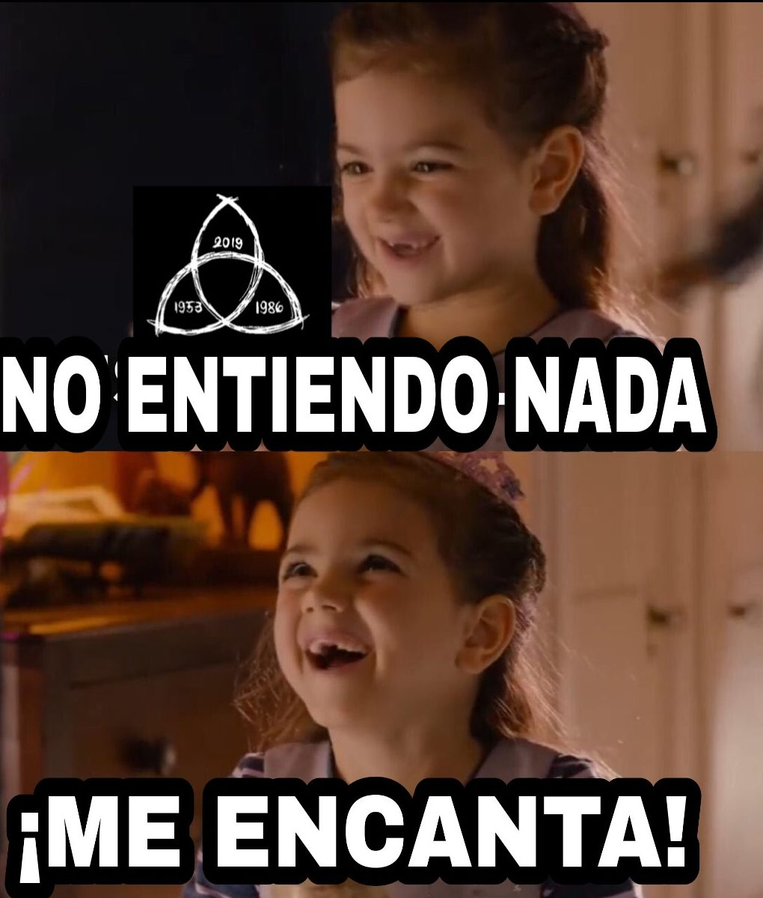
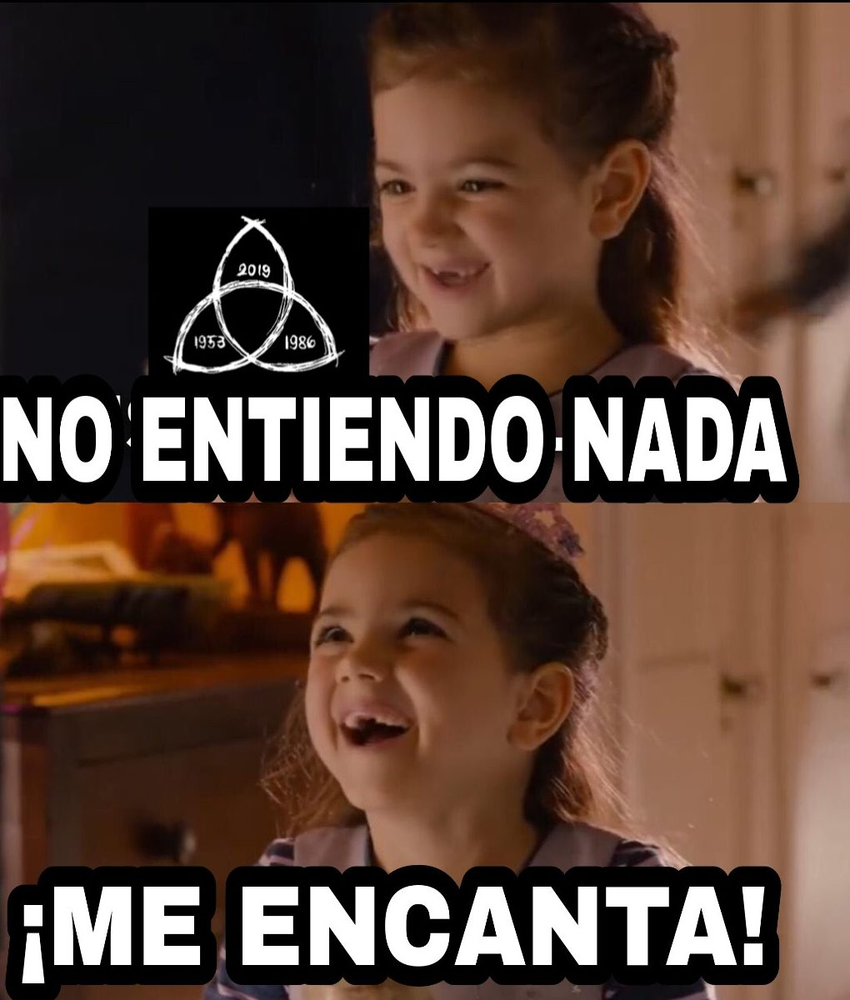

El Apocalipsis llegó... pero solo para esta página
No te preocupes, el restablecimiento del sistema no tomará 33 años.
Mientras esperas, puedes navegar por las distintas secciones de la página (si es que no se perdieron en el bucle).
No te preocupes, el restablecimiento del sistema no tomará 33 años.
Mientras esperas, puedes navegar por las distintas secciones de la página (si es que no se perdieron en el bucle).
